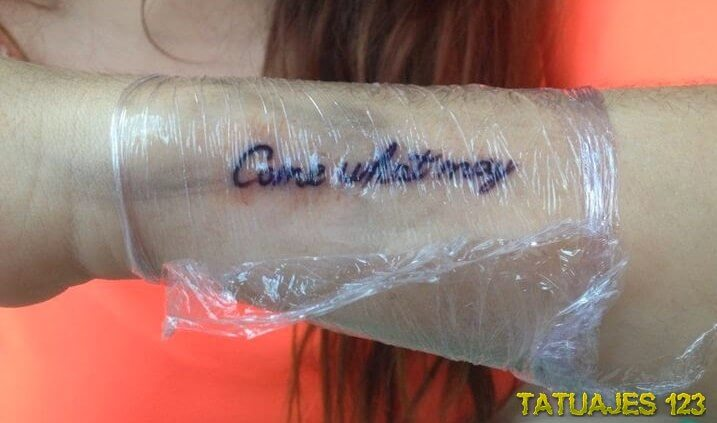
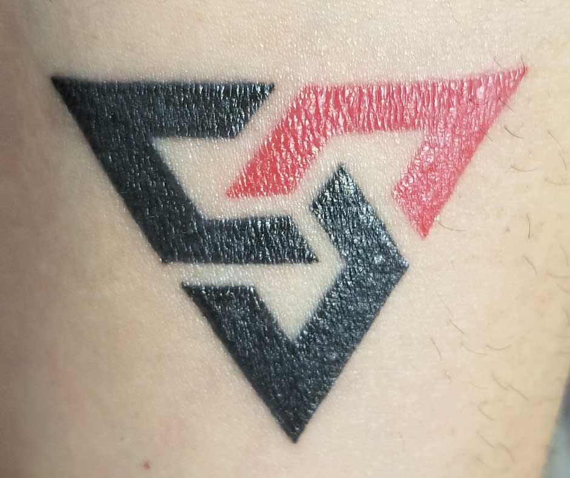
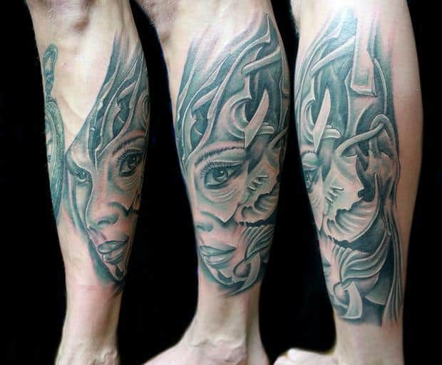

Primera Semana
Mantén el tatuaje limpio

limpia tu tatuaje dos veces al día para eliminar el exceso de plasma. Es ese plasma lo que forma las costras,
si hay demasiado se formarán costras más grandes que podrían secarse y quebrarse,
lo que podría hacer que el tatuaje pierda definición.
Usa una toalla suave para secar tu tatuaje dando golpecitos delicados,
luego aplica una capa abundante de crema que promueva la cicatrización del tatuaje para hidratar y reparar intensamente la barrera de la piel. Prueba dejar la crema en el refrigerador para obtener un efecto refrescante.
Segunda Semana
¡No te rasques!

A medida que comienza a cicatrizar tu piel, es normal que empieces a sentir tirantez y comezón.
Este es nuestro consejo más importante: ¡no te rasques!
Usa una crema calmante y un protector solar fría sobre el tatuaje,
prueba con agua termal refrescante en aerosol, practica meditación y respiración profunda,
párate de cabeza, usa guantes, haz lo que sea para distraerte, y ¡no te rasques!

Tercera y cuarta Semana
Sigue asi

A esta altura, ya se habrá caído la mayor parte de las costras y la piel descamada.
En esta etapa, tu tatuaje podría decepcionantemente opaco. Esto se debe a que todavía falta que se desprenda una fina capa de células muertas de la piel.
Podría resultar tentador tomar un cepillo y descascarar tu tatuaje, pero, ¡no lo hagas!